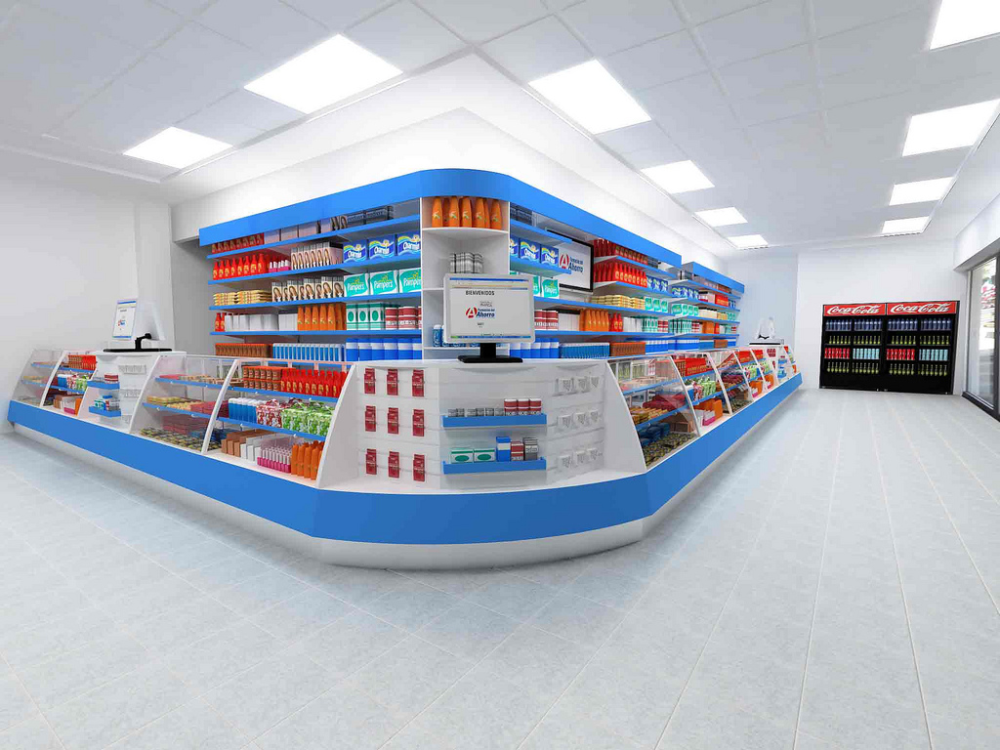

Para auxiliar as práticas de manipulação e dispensação de fitoterápicos, contribuindo com os Serviços de Fitoterapia e Farmácias Vivas existentes em todo o país, a Farmacopeia Brasileira lançou o Formulário de Fitoterápicos. No Formulário estão registradas informações sobre a forma correta de preparo e as indicações e restrições de uso de cada espécie, sendo os requisitos de qualidade definidos nas normas específicas para farmácia de manipulação e farmácias vivas. A sua publicação levou ao amadurecimento as discussões em torno do processo de registro de fitoterápicos no Brasil, o que culminou com a publicação pela ANVISA da Resolução nº 26 de 13 de maio de 2014, que criou a classe de produto tradicional fitoterápico, tendo como base para sua notificação o Formulário de Fitoterápicos da Farmacopeia Brasileira.
Quando se fala de práticas em fitoterapia no Brasil, sem dúvida, deparamos-nos com a existência de lacunas que comprometem o uso racional dessa conduta terapêutica.
Assim sendo, na tentativa de diminuir essas lacunas e contribuir com a fitoterapia racional, foi elaborado o Memento de Fitoterápicos da Farmacopeia Brasileira, um documento para consulta rápida por profissionais prescritores. Este Memento visa orientar a prescrição de plantas medicinais e fitoterápicos e, para isso, as monografias são baseadas em evidências científicas.
Além da Farmacopeia Brasileira, do Formulário de Fitoterápicos e do Memento de Fitoterapia, o Brasil elabora a já mencionada Relação Nacional de Medicamentos Essenciais (RENAME).
A adoção da RENAME é fundamental para orientar a padronização, quer da prescrição, quer do abastecimento de medicamentos, principalmente no âmbito do SUS, constituindo, assim, um mecanismo para a redução dos custos dos produtos (PORTELA et al., 2010). Apresenta o conjunto dos medicamentos a serem disponibilizados e ofertados aos usuários no SUS, visando à garantia da integralidade do tratamento medicamentoso.
É um programa de assistência social farmacêutica baseado no emprego científico de plantas medicinais e fitoterápicos, idealizado pelo professor Francisco José de Abreu Matos (F. J. A. Matos), em 1983, e organizado sob a influência da OMS.
Código Oficial Farmacêutico do país, onde estão estabelecidos os critérios de qualidade dos medicamentos em uso, tanto manipulados quanto industrializados, compondo o conjunto de normas e monografias de farmacoquímicos estabelecidos para o país.
Aquele obtido com emprego exclusivo de matérias-primas vegetais, cuja segurança e efetividade seja alicerçada no longo histórico de utilização demonstrado em documentação técnico-científica, sem evidências conhecidas ou informadas de risco à saúde do usuário e que seja caracterizado pela constância de sua qualidade.